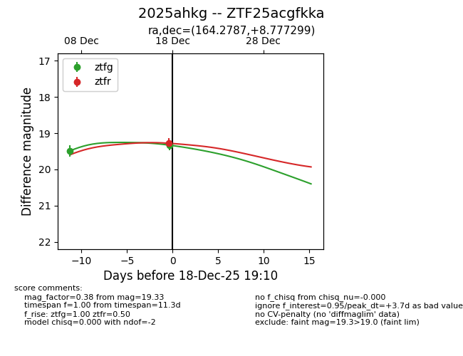
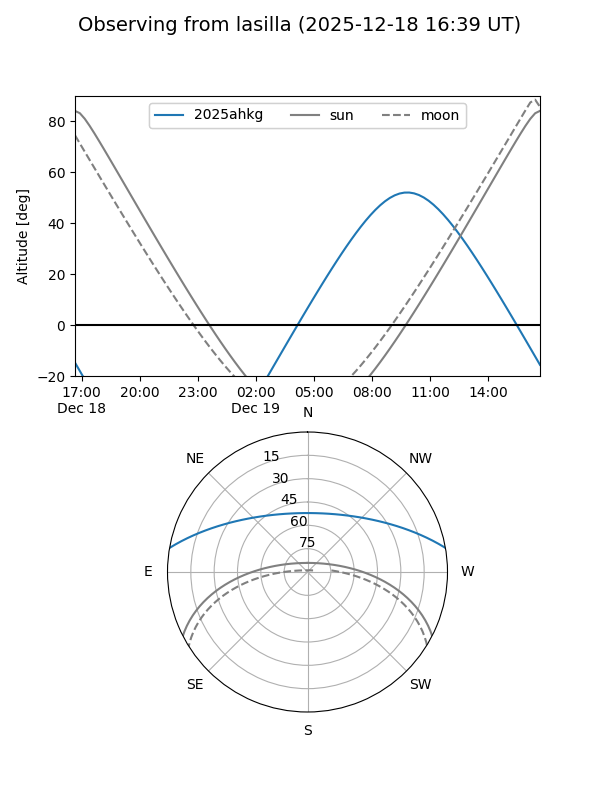
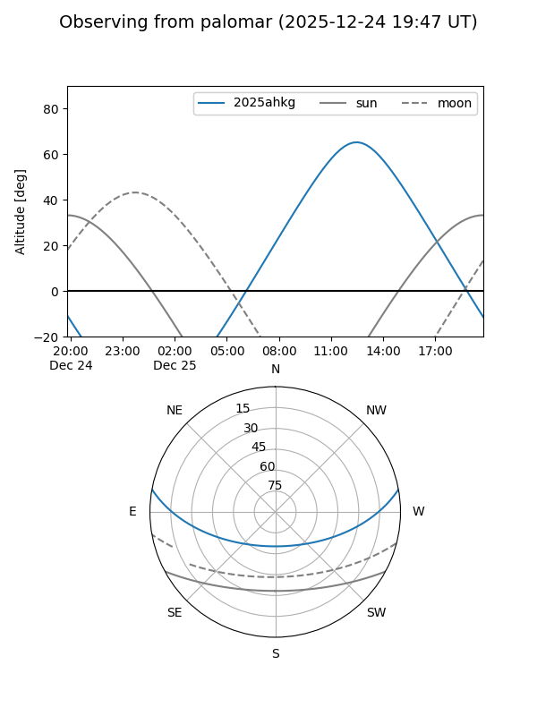
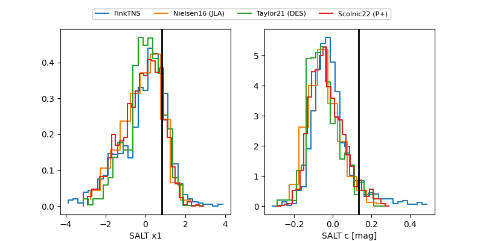

2025ahkg
Target 2025ahkg at 2025-12-18 13:22
Aliases and brokers:
FINK: fink-portal.org/ZTF25acgfkka
Lasair: lasair-ztf.lsst.ac.uk/objects/ZTF25acgfkka
ALeRCE: alerce.online/object/ZTF25acgfkka
TNS: wis-tns.org/object/2025ahkg
YSE: ziggy.ucolick.org/yse/transient_detail/2025ahkg
alt names
ZTF25acgfkka (ztf,fink_ztf)
2025ahkg (tns,yse)
Coordinates:
equatorial (ra, dec) = 164.2787,+8.77730
equatorial (HMS+DMS) = 10:57:06.90,+08:46:38.27
galactic (l, b) = (241.7321,+57.34825)
Photometry
last ztfg=19.49, ztfr=19.28
1 ztfg, 1 ztfr detections
Lightcurve

Visibility


Additional plots
